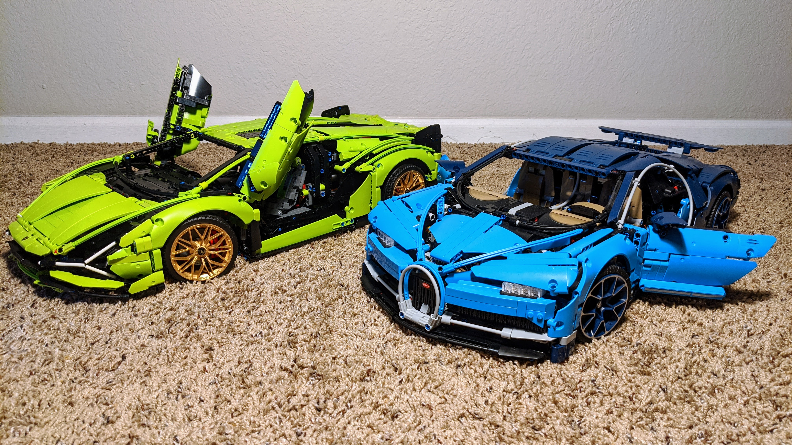

Random
Some random stuff.
Dec 2021
Started to build a digital clock with my Raspberry Pi and try to learn various tools/languages along to way including HTML, CSS, JavaScript, etc. Checkout this project here.
Aug 2021
Moved in to my first house, yay!
Jun 2021
My paper Proxy-GMRES: preconditioning via GMRES in polynomial space was finally accepted for publication in SIAM Journal on Matrix Analysis and Applications (SIMAX). The work was done during my postdoc at University of Minnesota and the first draft was finished almost two years ago from now.
Aug 2020
Just finished building LEGO Lamborghini Sián FKP 37, checkout the time-lapse video here! 
Apr 2020
One thing I learned during this pandemic: I still hate politics.
Jan 2020
A coronavirus outbreak is happening right now in my hometown Wuhan (link), best wishes to my family and friends back home.
Nov 2019
"Science is what we understand well enough to explain to a computer. Art is everything else we do." ― Donald Knuth
Oct 2019
Happy 70th birthday to China!
Sep 2019
Old but gold: Finite Simple Group (of Order Two).
Two really good shows I watched recently:
- 我住在这里的理由, a documentary series featuring normal Chinese living in Japan and normal Japanese living in China, check out their studio 和之梦 and YouTube channel 和之梦 - 官方频道.
- Thumbs Up!, documentary series by David Choe, Season 1 and Season 2. Super addictive, finished all episodes in one night! David Choe is pure genius.
Aug 2019
I decide to move my website from wordpress.com to Github Pages.